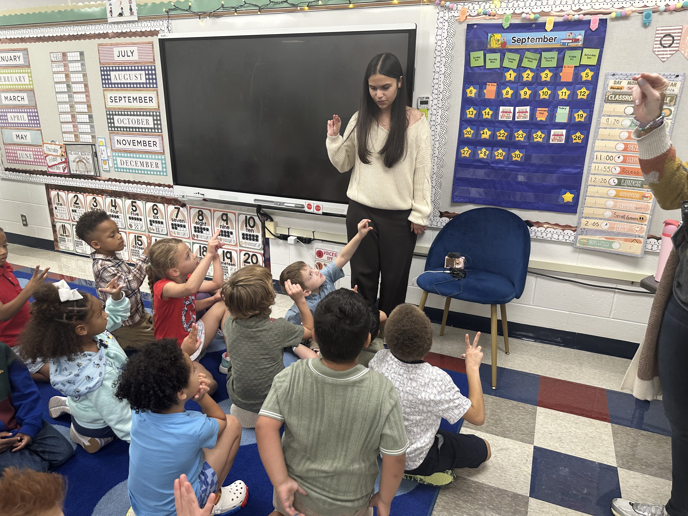
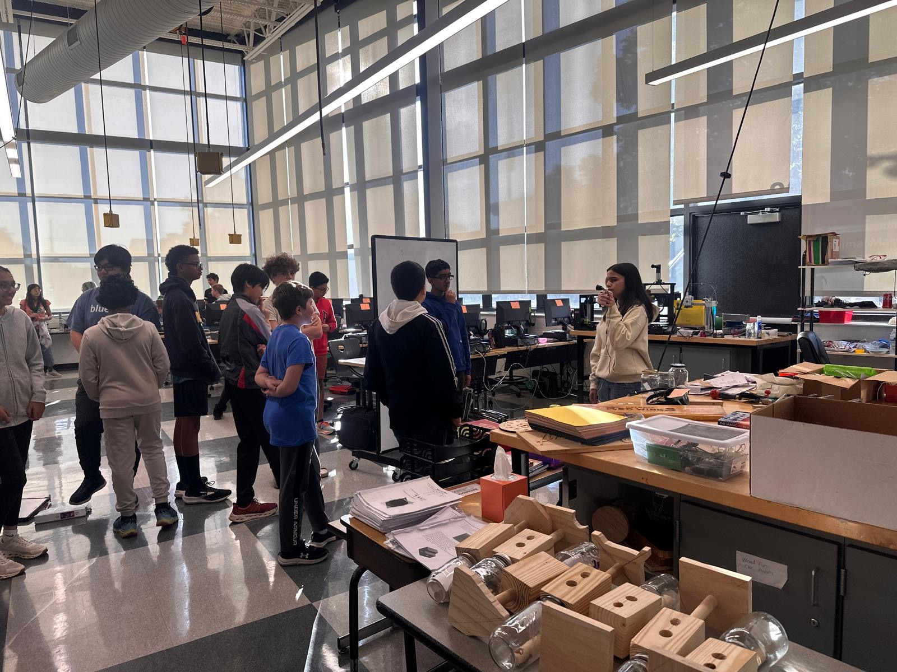
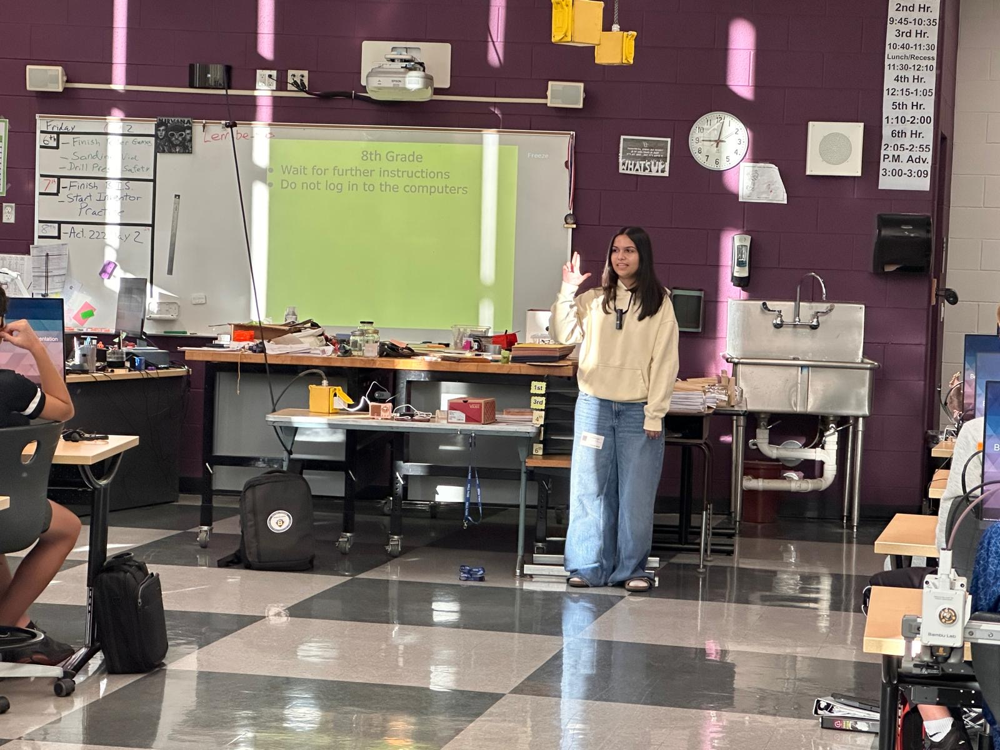
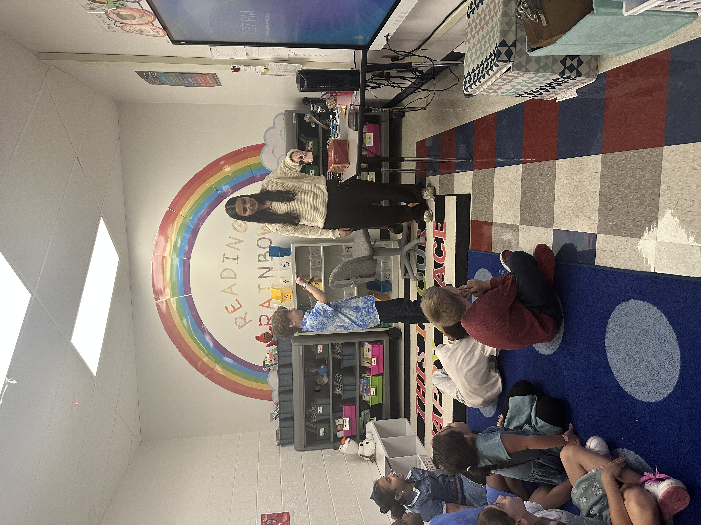
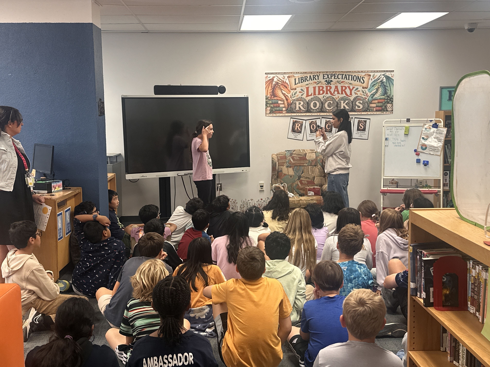
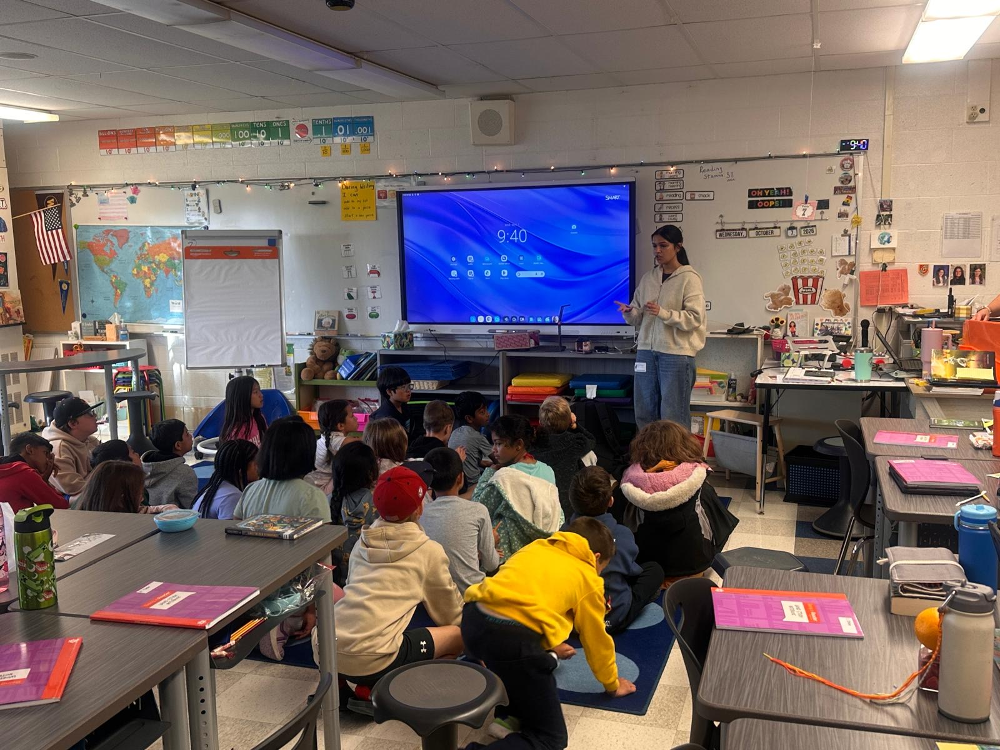
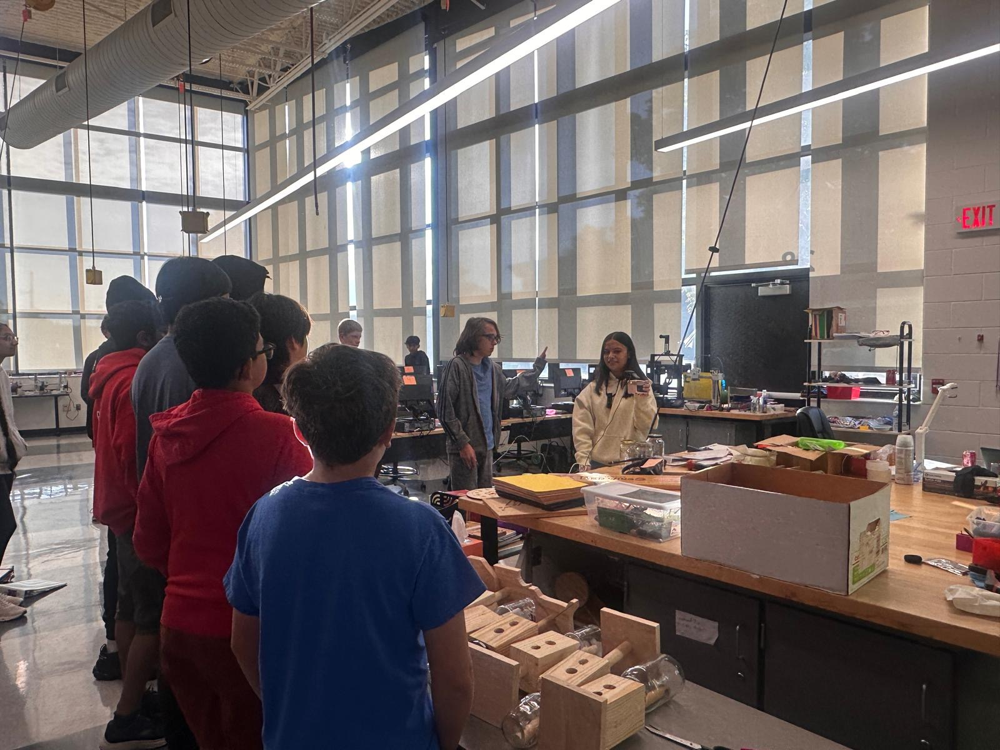

Community



In the span of 4 months, I have visited many schools, communities, and clubs. I spend a few minutes talking to them about ASL, and the benefits of learning it. I usually teach them a few words and phrases that can be handy, and a few that they want to learn. A few (sometimes surprisingly) popular words are hello, bye, brother, melt, and many others!


Most kids, and even adults, are fascinated by “machines,” especially ones that can speak. Because of this, I believe this ASL model is a great way to spark curiosity and spread awareness about American Sign Language!



I believe that things like this are especially fun to show to children because they are so enthusiastic and genuinely eager to learn. During these small sessions, I have had many kids come up to me with questions about how the machine works. I love comparing it to a person: the camera is like a pair of eyes, the Raspberry Pi is like the brain, and the speaker is like the mouth. Seeing the amazement and curiosity on the children’s faces is one of the most rewarding parts of sharing this project!


When I get the opportunity to demonstrate this machine to others, I love hearing their feedback and finding ways to improve it. During my first presentation, I noticed that the younger kids became frustrated with how long they had to hold up their signs and asked me to make the process faster. Taking their feedback into account, I reduced the number of frames from 75 to 30 to increase the model’s speed. I also had the opportunity to work with an ASL teacher who suggested important words and phrases to include, taught me more about the nuances of sign language, and even let me test my model with her. These opportunities to present and share my project mean so much to me because they allow me to see where I can improve through the perspectives of people who might one day use a tool like this themselves.